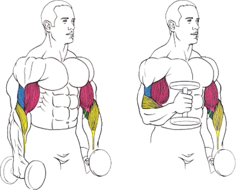

Данное упражнение прокачивает боковую часть бицепса, формируя его.
Исходное положение:
встать прямо.
руки с гантелями опущены вниз по бокам туловища.
кисти развернуты пальцами к бедру (нейтральный хват).
Техника выполнения:
поочередно поднимать гантели к плечу.
Рекомендации:
Во время выполнения спину следует держать ровно и не пружинить ногами. Не подавать локти вперед. Вся нагрузка должна приходиться только на бицепс.
Во время сгибания одной руки, вторая не должна висеть расслабленной. Она должна быть чуть согнута в локте и напряжена.
В каждом крайнем положении руку следует задерживать на 1-2 секунды. Спину можно немного прогнуть, но она должна быть зафиксирована в одном положении на протяжении всего сета.
Смотреть рекомендуется прямо перед собой.